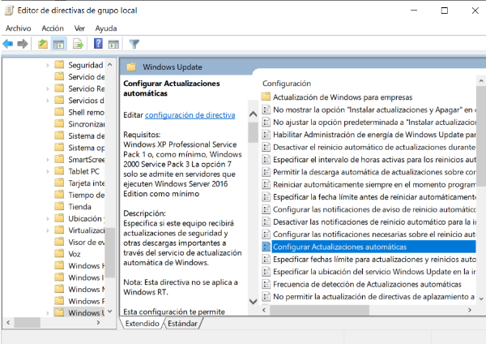
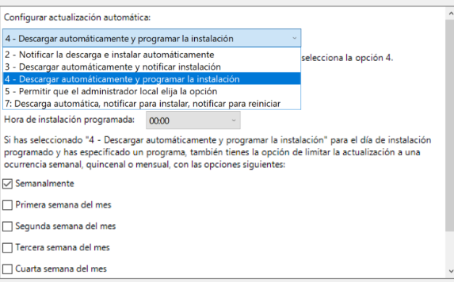
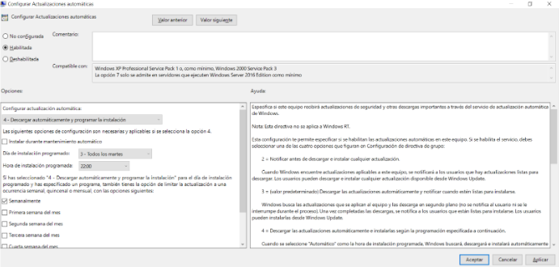
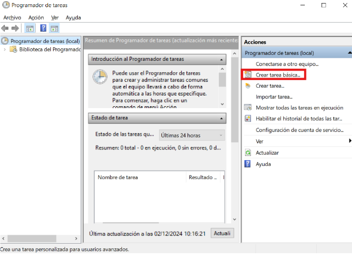
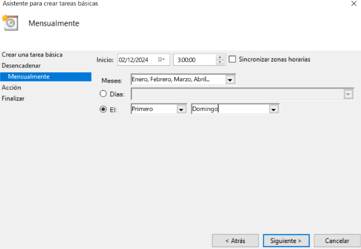
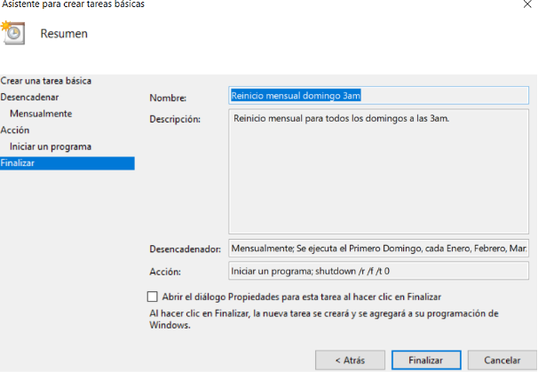

→ [ Beyond ] ←
Automatización de tareas
Automatización al actualizar Windows Server 2019 todos los martes a las 22:00pm.
Tenemos que dirigirnos a gpedit.msc. Después a ‘Configuración del equipo > Plantillas administrativas > Componentes de Windows > Windows Update’ y allí darle a la hoja que pone `Configurar Actualizaciones automáticas`.
Tendremos que seleccionar '4 - Descargar automáticamente y programar la instalación'.
Resumen de la tarea y finalización.
Configurar el reinicio automático mensual
Reiniciar servidor el primer domingo de todos los meses a las 3:00am.
Crearemos una tarea básica en el Programador de tareas.
Configuramos que sea el primer domingo de todos los meses a las 3:00am.
Como comando deberémos poner 'shutdown /r /f /t 0' para reiniciar el equipo.
